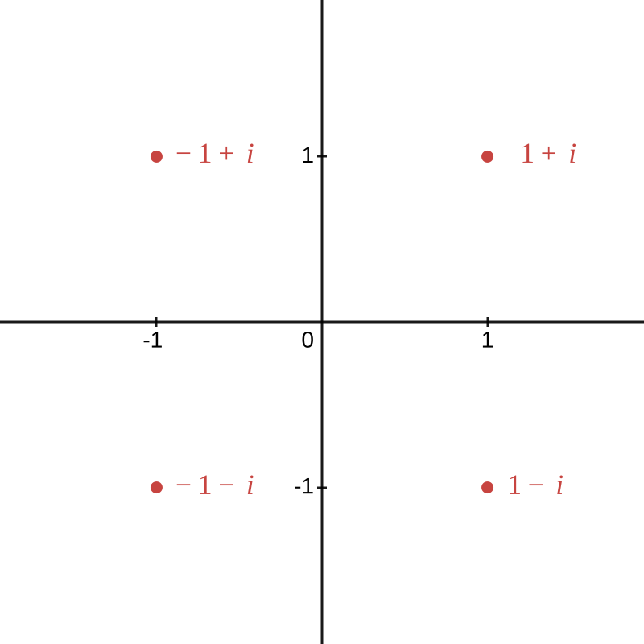
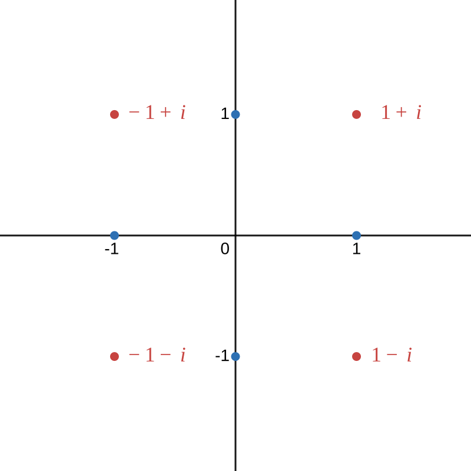

Enigmatica.
| Home |
| Blog |
| Reccomended |
| cool shit |
What the hell is even that -- Jeffrey Ridgway Sr.
I have recently untangled a knot in my understanding of mathematics that has been plaguing me for many a year now. It is the eternal question of imaginary numbers and their tenuous connection to reality.
Are they a mere mathematical convienience as they were originally conceived? A fundamental building block of reality? An abstract pattern studied for its properties that is under no obligation to conform to our expectations of what a block of "hard matter" might do?
Secondarily, why is this question so hard to find an answer to? Do the experts actually know what they're talking about? Am I just stupid? Are the mathematicians bullshitting us?
Anyone who has attempted to understand Imaginary numbers has likely found themselves asking these questions whether or not they eventually found satisfaction and understanding. Or more likely, were left bereft of either, having returned with only a frustrated ignorance.
Whichever group you dear reader fall into now I hope that you will leave here with your head full of understanding, having supped at the breast of my knowledge
I am Sisyphus and yall are the rocks -- unknown
Of the many questions I presented a moment ago I wish to first address the 4th, namely: Why is this question so hard to find an answer to.
After all, these imaginary numbers have been around for nearly 550 years at this point. One would think that some benevolent bright spark would have descended from the heavens and delivered through divine revalation what understanding we mere mortals could not produce through our own rationality and empiricism. But nay, the heavens remain shut and silent as always, perhaps God is too busy giving children cancer to bother with petty mathematics, but who knows, ours is not to reason why.
EXCEPT, that is, for when it is EXACTLY ours to reason why.
What it comes down to, in my opinion (which you should hold above all other opinions and not a few facts), is several factors, these being:
Now to be clear, I think that #3 is the root cause, the other 3 are more reasons why #3 has not been resolved
I'm a real devil with a calculator
I believe that many a person simply accepts the math as it is without a true interrogation of their mental model, without striving for congruency between the real and the imagined
There is no sin in this, If you understand the algorithms well enough to use them, then you understand them well enough to be useful. But for me personally, not understanding something I care about is like an itch in my soul. An itch that requires immediate remedy via the backscratcher of knowledge.
However, the plug-n-chug folks are not the only individuals successfully using imaginary numbers for their own purposes, which are surely nefarious. There are also experts who, in their infinite wisdom, hand out nuggets of explanation like bread to the poor. These include such staggering insights as: " is defined as the thing that when squared equals -1" or " represents a 90° rotation" or "you can construct a thing which behaves exactly like out of the reals so it doesn't matter". Truely, it would take an ignoramous possesed of an almost malignant stupidity to remain unenlightened when pelted with such profundities
One of the many culprits of these useless non-explanations is the curious
amnesia that experts fall victim too as soon as they leave the ranks of
the unwashed masses. They forget the hard won bricks of intuition that
they gathered slowly and ever so painfully as soon as they use them to
build the next floor in their tower of abstraction.
I wish for the life of me that I could remember where I heard this
phrase so that I could credit them, it was an interesting article I
think, and it may have been being read by the Primeagen?, but I
suppose that merely informing you that this snappy name and way of
thinking about learning and knowledge was not born of my intellect
but another, more magnificent one will have to do instead. It is
probably still out there if one cared to look, and would be a worthy
quest for a bored evening of "googling" if one had the wherewithal to
pull themselves away from tiktok for the minutes it might require,
I would do it myself, but alas, I must record several risqué
tiktoks of myself in a skirt and thigh highs to keep my audience
donating. Don't tell them I'm not a woman, the suspense is what keeps
them coming back
They forget the many false starts and bad predictions, all necessary steps
while building your mental model, and last but not least they forget what
it was even like to not know.
This is because once your mind finally understands something, the model complete, your understanding gets boxed up, the internals hidden and abstracted away from your conscious mind, so that you can use the abstraction as a building block iteself in future endevours. Saving valuable working space in your memory as you go on with your life. and for you it really is as simple as . Your mind has hidden all the logical machinery it built while you were trying to understand, and replaced it with a useful abstraction and a feeling of certainty. This is annoying perhaps, but if you imagine the alternative you understand why it is neccessary. Imagine if every time you thought about the properties of a square your mind reconstructed the WHOLE of your understanding in its entirity all the way down to the axioms of geometry. You could never get anything done because there would be no more room in your head, it would be full of square.
An interesting side effect of this realization about the nature of expertise, is that it reveals what the act of teaching really is. It is the art of unboxing your own abstractions of understanding and using that guide your students down the correct path quickly, minus a couple of the more tricky and winding false starts that you yourself have already tried and discarded. This accelerates the process greatly, while still requiring the student to build their understanding fully, brick by brick.
It is NOT the showing of the final result, with some piddling proof or elegant derivation tacked on quickly at the end after memorizing the conclusion. The student MUST construct their own tower of abstraction with each conclusion fairly won in single combat with their own minds. They must construct their own mental model all the way down. Every step investigated, lest they, like the wiley coyote before them, look down and suddenly realize they aren't standing on anything
This does bring another question to mind: why in the experts mind, is the matter as simple as definition? after all you might expect at least a passing nod to mechanism, to something more explanatory, the sort of nod you give to someone you knew in high school but haven't talked to in years and don't particularly want to start talking to now but there's still too much shared history to completely snub them and get away with ... for example.
The best kind of correct
Well in part, its because if you do just shut up and calculate with that definition, It Just Works™ The whole of complex algebra does simply fall out of that one singular monumental assumption that . This statement contains worlds unto itself. But that doesn't satisfy as a explanation does it?
It feels like this definition has been pulled from thin air, Ex nihilo and possesing neither history nor explanation nor context. This is a side effect of the difference between how math is taught and how math is invented.
When math is being invented, we try all possible definitions and combinations and permutations and calculations, but eventually, this great branching tree of decisions is trimmed when many of the tested paths lead to contradictions, or useless results. And then we throw away everything that we decide isn't worth keeping. So as you can see even though Mathematics is always constructed rigorously from axioms, exactly which constructions we choose to make, is just that, a choice. We choose to define imaginary numbers the way we do because it doesn't cause a contradiction, and its useful. Definitions follow utility, this is one of the distinctions that seperates Mathematics from its failure of a younger sibling Philosophy, who after thousands of years of study and research is fairly certain that we exist.
¡ENOUGH! I hear you cry. You want to get to the actual explanation, and you still don't understand whether Imaginary Numbers are truly imaginary, or just nominally so. Or even whether things that aren't real can be useful or said to exist in another way. Or if utility is itself a guide to the reality of things.
So here it is: Imaginary Numbers are EXACTLY as real as the natural numbers (0, 1, 2, 3, ...)
After all, as Kronecker said: "God made the integers, all else is the work of man"
This pretty much mirrors the average persons intuition, perhaps minus the rather uneccessary invocation of the divine, which has fallen out of fashion these days. But it gets at a deeper intuition, that the natural numbers, that fractions, that irrationals even, are somehow more than the other numbers. This is because our intuitions about quantity are quietly pulling the ol' switcharoo with our intuitions about numbers on us. The slippery little devils.
NOTE: I may refer to the types of numbers with the following symbols from here on in the article
| GROUP | SYMBOL | EXAMPLE |
|---|---|---|
| Natural Numbers | 0,1,2,3 | |
| Integerswhy ? because the germans came up with this system and the german word for "the Integers" is "Zee Integers" :D | -2, -1, 0, 1, 2 | |
| Rationals | 1/2, 1/3, 517/890 | |
| Reals | π, e, | |
| Imaginary | -2, -3.22383, , π | |
| Complex | , , |
ALSO NOTE: each category contains all the ones previous to it, e.g. the Reals are a superset (they contain all of) the Integers, just as the Integers contain all of the natural numbers
To go further, let us examine our intuition about numbers, I will do my best to be brief, but unfortunately for you my dear reader, brevity was never my forte.
Even I don't mess with the I.R.S. -- The Joker
Imagine for a moment, if you will, that you are an ancient mathematician who has invented both , the natural numbers, and the algebraic operations: . So you can write and solve problems similar to:
Etc. However you may note that there are equations that have no answer. Take for example. You don't mind this after all, because you can't have less than zero sheep can you, what would a number that answered this equation even mean?
Anywho, you, being the only mathematically literate person this side of the Euphrates decide that this is a fine time to open a bank, to track and safeguard the locals money. You have a ledger with deposits and withdraws. When a person deposits money you add the amount, when the person withdraws money you subtract the amount, and when a person wants to know how much money is in their account you simply work out the arithmetic like so: This carries on for a good while, until one day someone comes to you with an idea called a loan. This gist is that you have a lot of money right now that may not technically belong to you, but most of the time people leave most of their money in the bank, meaning that you could give some of that money to this person, who would of course pay you back the amount (plus interest) and put it back in the bank. If the person whose money you loaned out wants all their money thats fine you can just give them someone else's. After all its all in a giant pile. You track who owns what in the ledger. As long as everyone doesn't want their money at the same time this won't cause any problems, and in addition you'll make a tidy profit, which is great because up till now you've basically been running a charity
But how to represent this loan in your ledger? Well, since its money that he owes you, the most straightforward answer is to start another account with amount of the loan "in" it and then subtract every time the loan-ee makes a deposit, and add everytime the loan-ee withdraws more money from the bank meaning expanding their loan. This is the opposite of what you were doing for the normal accounts, but its fine, you'll just remember
So frank withdraws his loan of 50 gold, and over the course of the next few weeks he deposits 3 payments of 5 gold. Leaving the state of his accounts as:
One day Frank comes in and asks how much money he would owe you if he payed you all the gold in his account, so you try subtracting whoops nope, can't have numbers less than zero, after all, what would that even mean? You can't HAVE less than zero gold after all, so you subtract the other way, cash from loan Frank owes you 29 gold. By this point you have loans going with several people, and they all have multiple accounts, some people even have more than one loan, and when you need to tell their total state of affairs you have to track down every account and combine them, but only some orders of combinations work, after all, if a person has one account with 3 gold in it, a loan still owing 7, and a final account that contains most of their wealth at 35 gold. You can't subtract these in the wrong order, because your tally along the way can never be less than zero, let alone the final sum
This is not to mention the many many clerical errors you've made because of the rules for loan accounts and normal accounts being different, and just a pattern external to the mathematics that you have to remember. You've added many a deposit to a loan when you should have subtracted and vice versa
Its all quite a hassel, the problem you are trying to describe is just not fitting into the mathematics that you've invented. Loans are just not a good fit for
And so, bemoaning your situation, you sit and you stare at the expressions you've written backwards causing them to have no answer But hold on a minute. You notice something about the last two. They're equivalent. in fact, as you look through all the expressions and equations you've written, all of the expressions can be similarly rearranged to the form . This happens every time that math comes out that the customer owes you money. It can always be written as an equation like or or where is a positive Natural number and is our solution.
Of course, there is no solution to these equations, there is no natural number that equals zero minus anything. That's just not how natural numbers work, they are quantities, they are something you can have, amounts that you can hold in your hand. This was useless algebra on your part
unless... there were numbers that could solve the equation What if... we made some up? We already made up , why not more? Especially if they have useful properties. If we had such a number, after all, we could use it to represent debt very nicely. A negative number in the account would just mean that the customer owed you money and a positive number means they have money in the account.
So, what is the number that answers ? Well, because this number represents the commonality between all the expressions which can be rearranged into why don't you call it negative two, written . You could call it anything, it could be or or even , but its useful if its name indicates something about it, so you use the name to mark which natural number subtracted from zero this number is a solution to.
It follows all the regular rules of algebra, except that it has the property of being the opposite of a natural number. And if these two are summed together you get zero.
In one fell swoop you have solved all your problems, you no loinger need to manually decide whether deposits add or subtract on a per account basis, because loans can now be represented as negative number. So deposits always add. It also doesn't matter what order you do your subtraction and addition in now because your total can be negative for a brief while in the middle of calculations, its perfectly fine for that to happen. If a customers balance sums in total to a positive, they own more than they owe, and if it sums to a negative, they owe more than they own. and they go straight to jaildebtor's prison to be precise.
Careful with the thinking, you might hurt yourself you muppet -- unknown
As you can see, by adding negative numbers to our system, we've added the ability for our math to speak naturally about things that not only have quantities, but about quantities that oppose each other. A concept useful when representing voltages, bank accounts, and relative altitudes, among innumerable(heh) other things.
But are they real!? you cry with frustration as you rend your cloths and gnash your teeth. After all -3 is not a quantity you can't have less than zero of something, but it fits neatly with the concept of debt, it represents a class of problem our natural numbers struggle to resolve cleanly. Despite all this, the answer, is a resounding NO
To reiterate: is NOT a quantity, it is NOT REAL , we have left the realm of things that you can HAVE which is the only class of number that most people are sure exits.
Whoa dude, like what if we're all like, not real man -- Descarte, probably
You are probably confused now. After all I said that the Imaginary numbers were as real as the Natural numbers, and then I said the Negative numbers aren't real. And who on earth thinks that the Negative numbers are less real that the Imaginary numbers? But you have made an error dear reader, you have assumed something. Because you see, the Natural numbers were never real either. And it is this assumption that they are that has lead you astray.
Yes you heard me right. , yes even itself, is not real, and it never was. "But it's a quantity?!" I hear you cry and NO, it is not. I have been saying so throughout the beginning of this article so as to not tip you off, but this is the misunderstanding that is holding you back from true comprehension of imaginary numbers.
Numbers are not quantities
Numbers are a pattern, they are a set of labels that have an order and nothing more. We use them to REPRESENT quantities, just as we use the integers to represent quantites with polarity (if you wish to see a more detailed examination of this, go to the further reading section of the footer and watch the video on constructing the natural numbers from Another Roof Another Proof)
Quantities, however, ARE real, they are a measurable thing with certain properties and we built to represent them.
if you have two piles of rocks, you have two quantities, and if you combine these piles of rocks you have a third larger quantity. We constructed the natural numbers and addition such that when you assign the correct labels which correspond to the quantities of both piles, and then you perform the operation of addition upon those labels, you get the label corresponding with the quantity of the combined pile. But the numbers themselves are just made up. if you take a quantity away from a quantity, thats represented by subtraction. If you have the same quantity multiple times you can represent that with multiplication. If you break the quantity in equal groups you can represent this with division
But the labels just do whatever we want them to, they represent whatever we need. THIS is why its fine for a number squared to equal a negative. It is true that a quantity squared can never equal a negative, but a number is not a quantity. A number is just a label that does whatever we define it to do. So people get confused saying that there is no number that when squared can make a negative, when what they truely are conceptualizing in their heads is that there is no QUANTITY that when squared can equal a negative. This is because quantities are so easy to conflate with the positive Reals. This conflation is so strong that we think that they are one and the same, which leads to confusion when we do things that make perfect sense to do to numbers (such as define a new type that squares to negative one) but is utterly incomprehensible from the interpretation of quantities.
So in reality, there is ABSOLUTELY NO DIFFERENCE IN THE NATURE OF THE FOLLOWING STATEMENTS:
NUMBERS ARE PATTERNS, patterns that we create because they map neatly onto and cleanly represent problems that we are interested in solving.
(if you're still struggling it may help you to go to the addendum section and see a way that you can construct an using nothing but the real numbers and if that doesn't help then see the video by Another Roof Another Proof about constructing All the types of numbers AFTER watching the video on constructing the Natural numbers, they build on each other.)
This is my point, this is what little enlightenment I can offer you, this is the gnosis that you must take unto yourself even if you remember nothing else of what I have written.
numbers are not the quantities they represent
Don't worry I've done plenty of math, it'll be easy, like peeling a turtle -- unknown
What you need to take from our invention of the integers is that we got along pretty well fine without them. But by representing quantities that oppose solely using positive numbers we had to impose external rules and patterns to the math in order to represent negatives. Such as reversing whether a deposit added or subtracted. Or managing the order that you do you tallying up in to prevent the total from being temporarily negative
however by creating a new pattern, a new type of number that fits the problem we're working on our task became smooth and uncomplicated. Negatives encode the concept of polarity, of opposition.
Similar processes lead to our invention of the Rationals (Fractions) which solve equations no whole numbers can solve such as , Irrationals (π, e, ) which are numbers that no fraction can represent. And finally, to the creation of the Complex numbers which solve equations no positive or negative real number can such as How do they do this? They encode the concept of cycles, of repetition. As you may know, , however, it is time to think about the patterns that arise from this, and how we can use them to represent problems in nature that we wish to solve. It is fairly trivial to see how cyclical patterns arise from , you just multiply it by itself a bunch of times You'll notice that we started repeating ourselves after 4 multiplications. You also can multiply a complex number by multiple times. Lets do it and see what happens Wait a minute... this sign flipping pattern reminds me of points moving around through the quadrants of a graph. Lets graph these points and see if the geometry gives us any insight, We'll put the real part of the point on the x-axis and the imaginary part on the y-axis

huh, it kinda looks like the point is rotating by 90° every time we multiply by . Lets put the other points we multiplied on there as well to double check

Well would'ya look at that. Multiplying by makes points rotate by 90° in the plane. This begs the question, can we multiply by something to rotate by arbitrary angles?, the answer is yes, its the complex number or written another way (we will not be going through the derivation if you are confused about what it even means to take a number to a complex exponent, then see feynmann's lecture on complex algebra in the addendums, I will also be writing another blog post on this very topic shortly about expanding your concept of exponentiation so you also could hang around for that if you found this one helpful :D today as this article is long enough, and if you're here its probably after your high school math class introduced complex algebra to you so you already have some idea how they behave already anyways)
Now, you may see how this could useful maybe in some esoteric mathematical context, but what about those of us whose concerns are more earthly than checking how many N dimensional polyhedral vector bases can you fit into a hyper-tesseract before they stop tesselating and start forming monads. Well to answer your question, they are incredibly useful. Because you see, Complex numbers encode the concept of cycles, and where there are cycles, there are circles, and where there are circles, there are sinusoids and angles and trigonometry and rotation and WAVES. Not to mention imaginary numbers beget Eulers' identity and formula, one of the most important mathematical inventions ever as it links algebra, geometry, and trigonometry all together into one.
But the waves are my favorite part, because you see I'm an Electrical Engineer, and my entire field would be anywhere from impossible to an absolute pain in the ass if not for imaginary numbers
This is because sinusoids and exponentials are the solution to entire classes of Differential Equations, and Differential Equations describe quite literally everything. And complex numbers massively simplify the representation and manipulation of these equations because of eulers identity which you may remember, , ties both of these together into one neat package
What this means is that the math the makes the power grid possible, that describes a buildings response to an earthquake, that powers radios and the suspension in your car, every P.I.D. industrial controller system for the last 100 years, and every guitar amp and audio filter is based in math described by complex algebra.
And all because they deal with waves, and complex algebra lets us treat waves, in all their glorious complexity, like they are just a number
If you remember the analogy with the negative numbers from earlier, all of these problems would be possible (at least theoretically) to describe without complex numbers, but it would be clunky, difficult, and error prone. however, makes the process smooth, because it FITS THE PROBLEM
Numbers are not quantities, they are useful patterns that we make up
Complex numbers, are just another useful pattern, not built for describing quantities like Real numbers, but for describing waves and cycles and rotation
Q.E.D.
So now my disciple, thou art enlightened. Go forth and when you are questioned as to what an imaginary number is say " is defined as the thing that when squared equals -1" and revel as the idiot before you gnashes their teeth in frustration, or you know, direct them to this webpage, I'd appreciate the traffic 👉👈 UwU.
{kind=link}